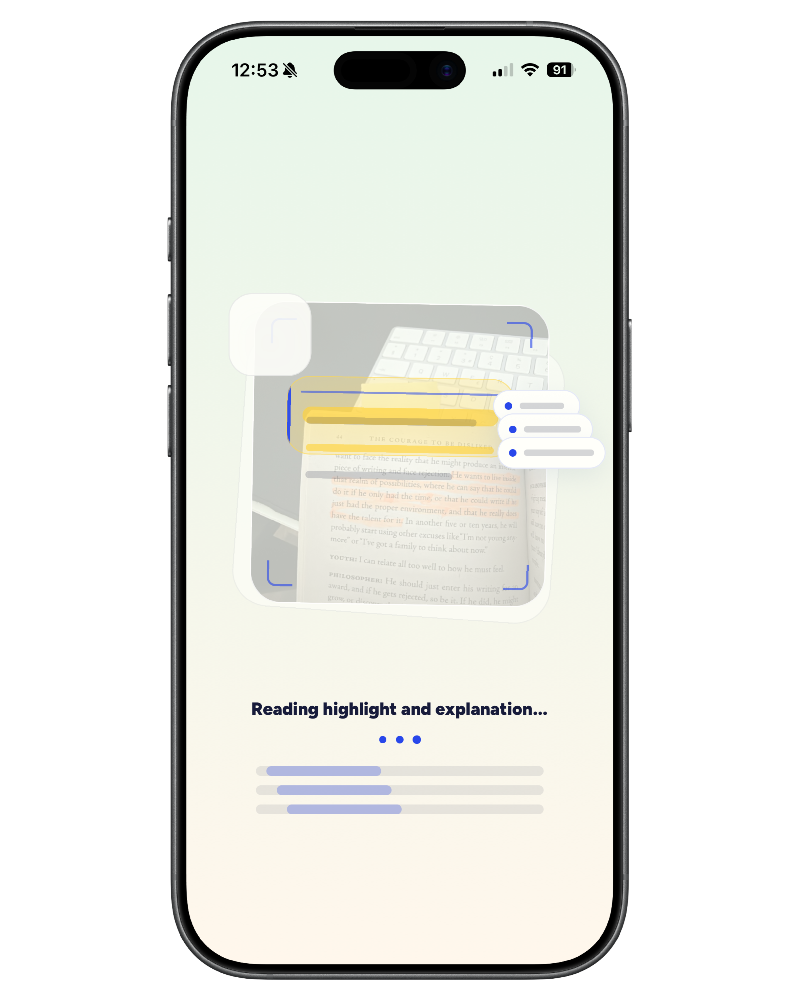
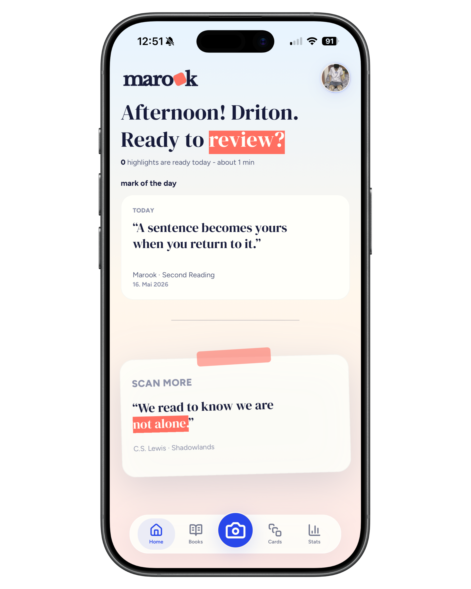
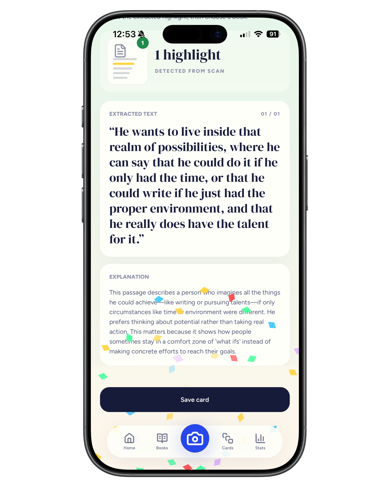
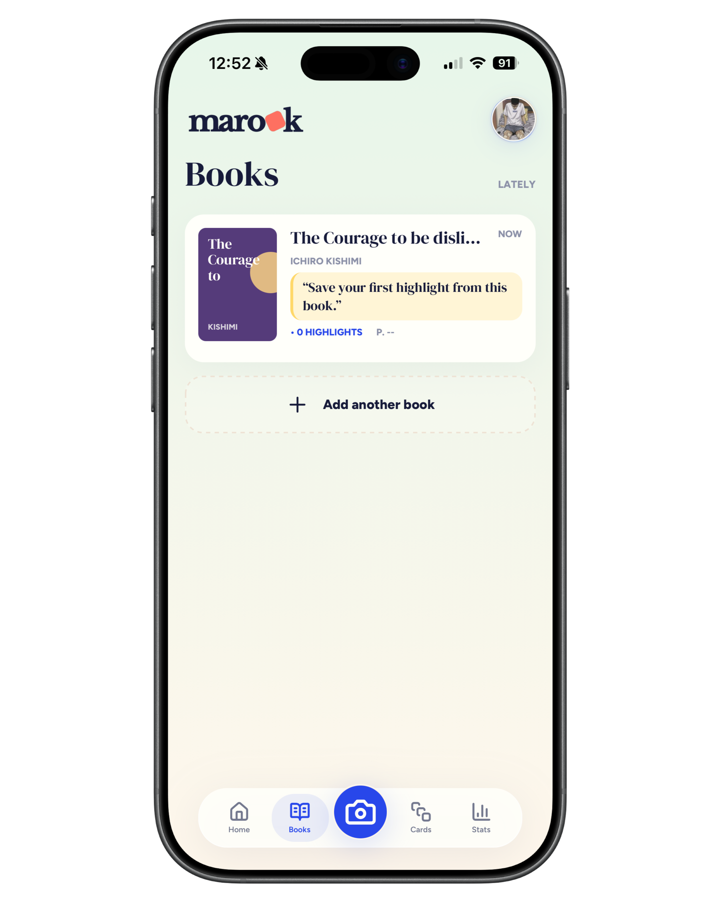

Highlights stay on the page
Important thoughts end up on paper, but rarely make it into your active memory.
Marook scans your highlights, extracts important passages, and turns them into clear AI explanations, flashcards, and a personal knowledge library.


Highlighting is easy. Remembering what you highlighted takes a second step. That is where many readers lose their best ideas.
Important thoughts end up on paper, but rarely make it into your active memory.
Typing, sorting, and explaining ideas interrupts the reading flow and quickly gets postponed.
Without a review system, even strong ideas become blurry after a few days.
Marook turns a highlighted page into a structured learning moment: capture the text, understand the meaning, save it as a card, and review it later.
"I read at night, scan my highlights in the morning, and have material ready for the next session. It finally does not feel like note-taking work."
Lina A. Medical student · uses Marook after every chapter"The AI explanation turns a beautiful quote into a clear idea. I remember not just the sentence, but why it mattered."
Marco K. Nonfiction reader · building a knowledge library"My highlights used to be scattered everywhere. Now I open Marook and instantly find the card I need for a presentation."
Sara N. Product manager · reviews before meetingsPoint the camera at a book or study page and save relevant passages without typing them out.
AI explanations turn highlighted passages into clear, reviewable summaries with the core idea intact.

Add your books, collect highlights by title, and find ideas later exactly where they came from.

Save ideas in one personal library instead of scattered note apps.
Flashcards turn passive reading into active recall.
Every good highlight becomes a small building block in your knowledge system.
Install Marook for free on your iPhone.
Capture book pages, scripts, or study material with highlighted passages.
Get explanations, save cards, and review the ideas that matter.
The download is free. According to the App Store, free users get 10 AI uses; Premium includes 150 AI uses per month.
For readers, students, and anyone who wants to remember more from books, study pages, or learning material.
Marook is currently available as an iPhone app.
Marook requires iOS 15.1 or later.
Privacy details are available in the App Store and in the developer's linked privacy policy.
Download Marook and turn reading into a system you can return to anytime.